2026
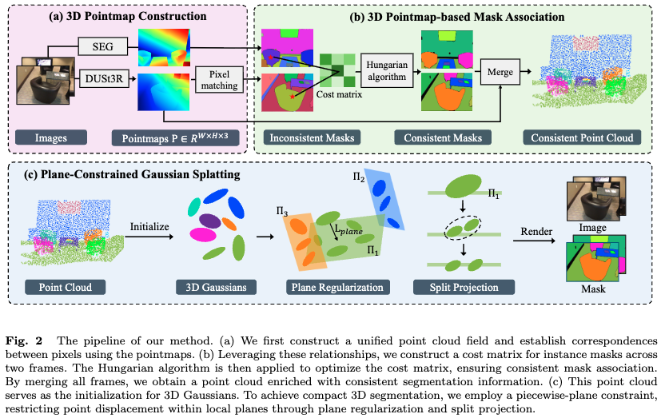
Pointmap Association and Piecewise-plane Constraint for Consistent and Compact 3D Gaussian Segmentation Field
Wenhao Hu, Wenhao Chai, Shengyu Hao, Xiaotong Cui, Xuexiang Wen, Jenq-Neng Hwang, Gaoang Wang
International Journal of Computer Vision (IJCV), 2026
[Paper]
[Website]
This work presents CCGS, which unifies view-consistent 2D segmentation and a compact 3D Gaussian scene representation
via pointmap matching and plane constraints, achieving superior performance on both ScanNet and Replica benchmarks.
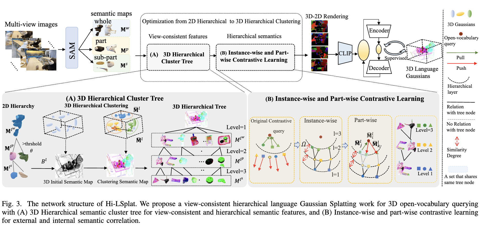
Hi-LSplat: Hierarchical 3D Language Gaussian Splatting
Chenlu Zhan, Yufei Zhang, Gaoang Wang, Hongwei Wang
IEEE Transactions on Visualization and Computer Graphics (TVCG), 2026
[Paper]
Hi-LSplat is a view-consistent hierarchical language Gaussian splatting method that achieves superior 3D open-vocabulary
querying performance by fixing view inconsistency and hierarchical semantic deficits in existing 3DGS-based models.
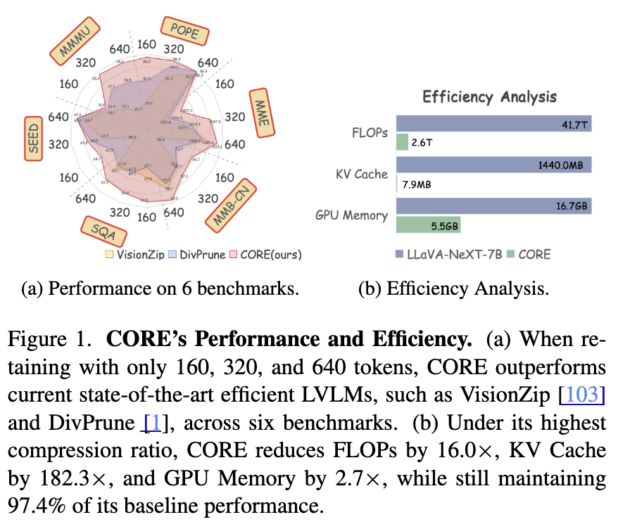
CORE: Compact Object-centric REpresentations as a New Paradigm for Token Merging in LVLMs
Jingyu Lei, Gaoang Wang, Der-Horng Lee
IEEE Conference on Computer Vision and Pattern Recognition (CVPR), 2026
[Paper]
Novel CORE object-centric token compression drastically cuts high-res LVLM computation costs with negligible performance
drop.
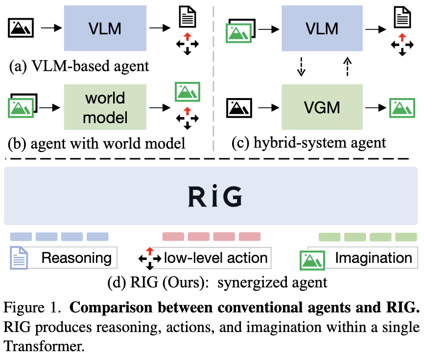
RIG: Synergizing Reasoning and Imagination in End-to-End Generalist Policy
Zhonghan Zhao, Wenwei Zhang, Haian Huang, Kuikun Liu, Jianfei Gao, Gaoang Wang, Kai Chen
International Conference on Learning Representations (ICLR), 2026
[Paper]
We propose RIG, the first end-to-end generalist embodied policy synergizing pre-action reasoning and outcome
imagination, achieving 17×+ sample efficiency gains and enhanced robustness, generalization and test-time scaling.
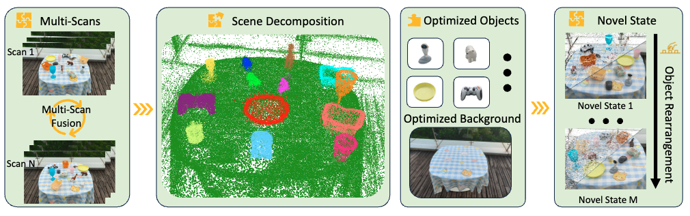
IGFuse: Interactive 3D Gaussian Scene Reconstruction via Multi-Scans Fusion
Wenhao Hu, Zesheng Li, Haonan Zhou, Liu Liu, Xuexiang Wen, Zhizhong Su,
Xi Li, Gaoang Wang
AAAI Conference on Artificial Intelligence (AAAI), 2026
[Paper]
[Code]
[Website]

IGFuse enables high fidelity rendering and object level scene manipulation without dense observations or complex
pipelines.
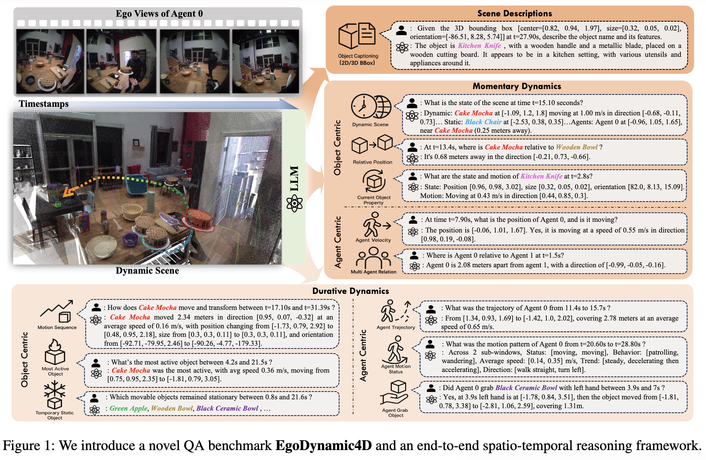
Understanding Dynamic Scenes in Ego Centric 4D Point Clouds
Junsheng Huang, Shengyu Hao, Bo-Cheng Hu, Hongwei Wang, Gaoang Wang
AAAI Conference on Artificial Intelligence (AAAI), 2026
[Paper]
We introduce EgoDynamic4D, a novel egocentric dynamic 4D scene QA benchmark with comprehensive 4D annotations and
CoT-equipped QA pairs, plus an end-to-end spatio-temporal reasoning framework outperforming baselines.
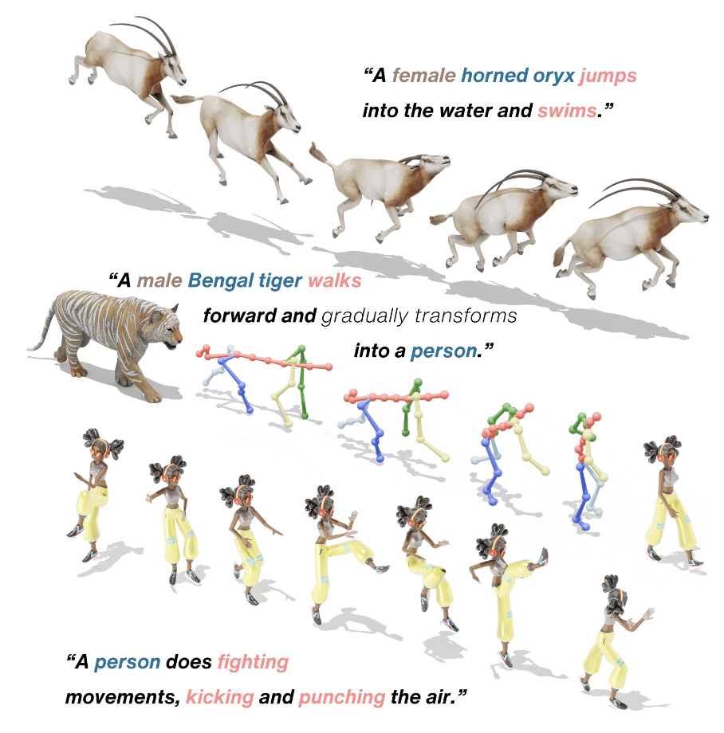
X-MoGen: Unified Motion Generation across Humans and Animals
Xuan Wang, Kai Ruan, Liyang Qian, Zhizhi Guo, Chang Su, Gaoang Wang
AAAI Conference on Artificial Intelligence (AAAI), 2026
[Paper]
We propose X-MoGen, the first unified cross-species text-driven motion generation framework for humans and animals,
paired with the large-scale UniMo4D dataset, outperforming state-of-the-art on both seen and unseen species.
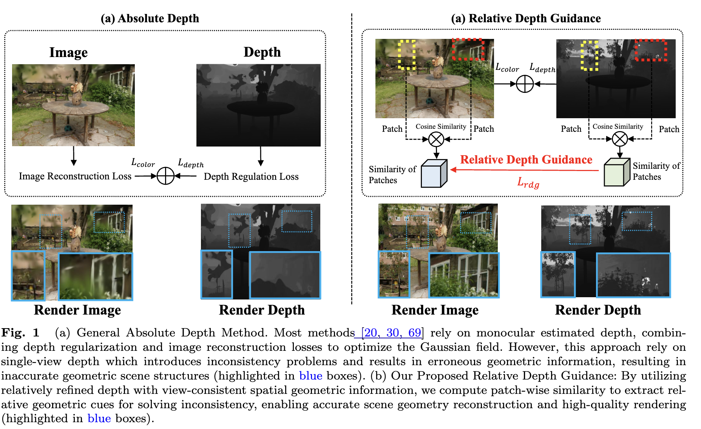
RDG-GS: Relative Depth Guidance with Gaussian Splatting for Real-time Sparse-View 3D Rendering
Chenlu Zhan, Yufei Zhang, Yu Lin, Gaoang Wang, Hongwei Wang
International Journal of Computer Vision (IJCV), 2026
[Paper]
We propose RDG-GS, a novel relative depth-guided 3D Gaussian Splatting framework for sparse-view novel view synthesis,
achieving state-of-the-art rendering quality and efficiency across mainstream 3D reconstruction benchmarks.
2025
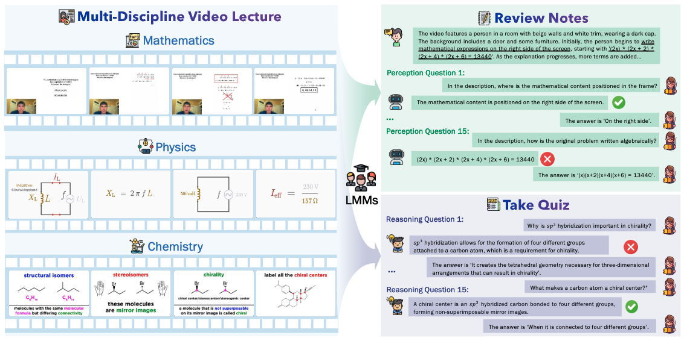
Video-MMLU: A Massive Multi-Discipline Lecture Understanding Benchmark
Enxin Song, Wenhao Chai, Weili Xu, Jianwen Xie, Yuxuan Liu, Gaoang Wang
Findings Workshop, IEEE International Conference on Computer Vision (ICCV), 2025
[Paper]
[Code]
[Dataset]
[Website]

Video-MMLU is a benchmark for evaluating LMMs' multi-discipline lecture understanding, covering math, physics,
chemistry, with captioning and QA tasks, revealing model limitations.
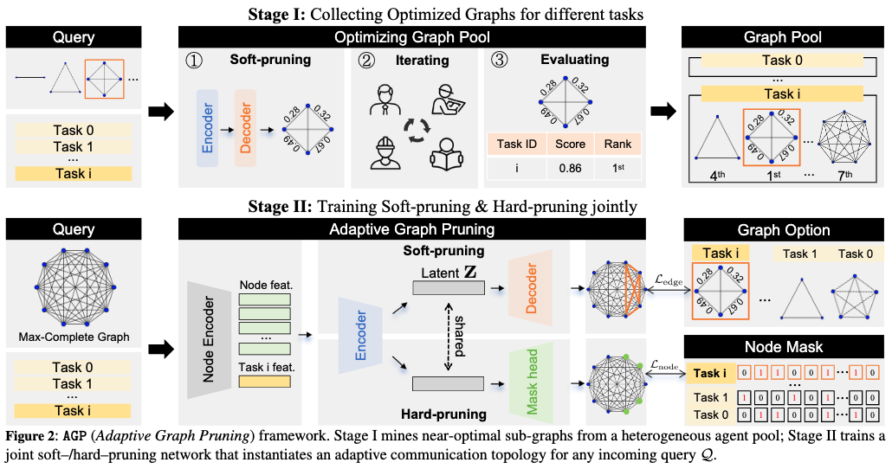
Adaptive Graph Pruning for Multi-Agent Communication
Boyi Li, Zhonghan Zhao, Der-Horng Lee, Gaoang Wang
The European Conference on Artificial Intelligence (ECAI), 2025
[Paper]
[Code]
[Dataset]
[Website]

Adaptive Graph Pruning (AGP), a novel task-adaptive multi-agent collaboration framework that jointly optimizes
agent quantity (hard-pruning) and communication topology (soft-pruning).
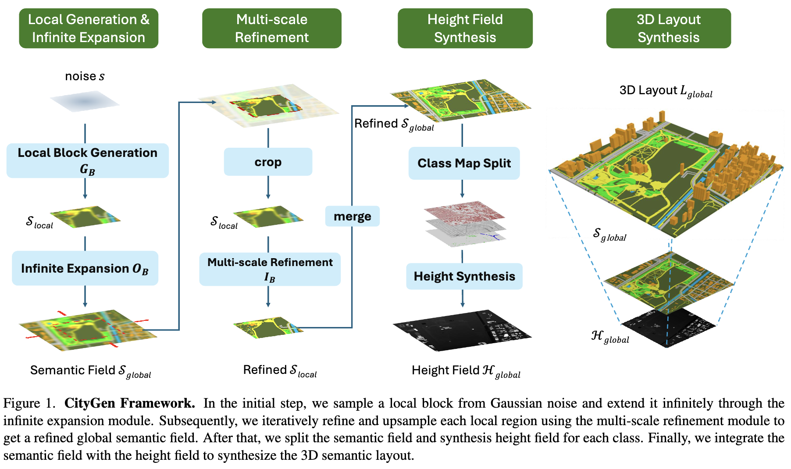
CityGen: Infinite and Controllable City Layout Generation
Jie Deng, Wenhao Chai, Jianshu Guo, Qixuan Huang, Junsheng Huang, Wenhao Hu, Shengyu Hao, Jenq-Neng Hwang, Gaoang
Wang
IEEE Conference on Computer Vision and Pattern Recognition Workshop on Urban Scene Modeling (CVPR Workshop),
2025
[Paper]
We propose CityGen, an end-to-end framework for infinite, diverse and controllable city layout generation with
sketch-based control and 2D-to-3D conversion, achieving state-of-the-art performance across multiple metrics.
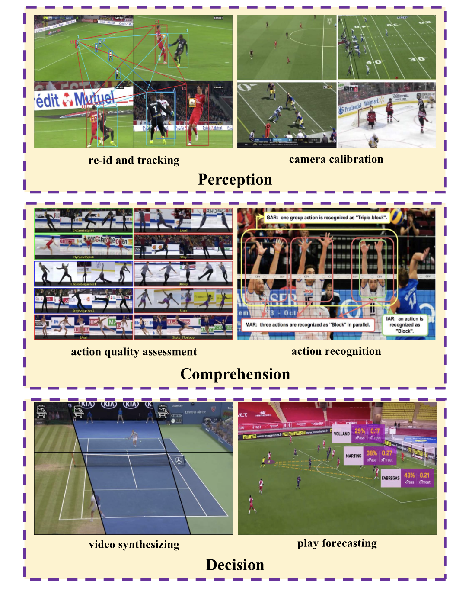
A Survey of Deep Learning in Sports Applications: Perception, Comprehension, and Decision
Zhonghan Zhao, Wenhao Chai, Shengyu Hao, Wenhao Hu, Guanhong Wang, Shidong Cao, Mingli Song, Jenq-Neng Hwang,
Gaoang Wang
IEEE Transactions on Visualization and Computer Graphics (TVCG), 2025
[Paper]
This paper presents a comprehensive survey of deep learning in sports performance, covering algorithms, datasets &
virtual environments, challenges and future trends, providing a valuable reference for researchers.
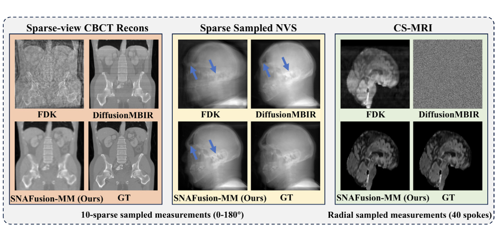
SNAFusion-MM: Distilling Sparse Sampled Measurements by 2D Axial Diffusion Priors with Multi-step Matching for
3D Inverse Problem
Xiaoyue Li, Tielong Cai, Jun Dan, Sizhao Ma, Kai Shang, Mark D Butala, Gaoang Wang
Information Fusion, 2025
[Paper]
We propose SNAFusion-MM, a unified sparse 3D medical reconstruction framework, outperforming SOTA on CBCT, X-ray NVS and
CS-MRI with superior generalizability on a single GPU without retraining.
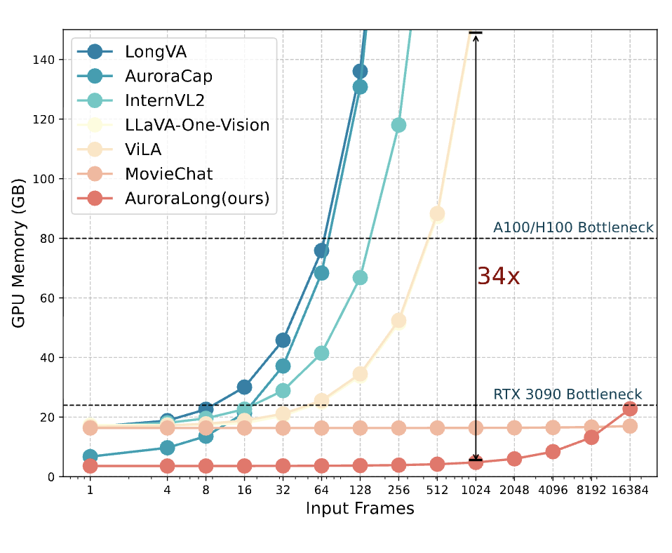
Bringing RNNs Back to Efficient Open-Ended Video Understanding
Weili Xu, Enxin Song, Wenhao Chai, Xuexiang Wen, Tian Ye, Gaoang Wang
IEEE International Conference on Computer Vision (ICCV), 2025
[Paper]
We propose AuroraLong, the first linear RNN-based LLM backbone for LLaVA-like open-ended long video understanding,
achieving comparable performance to similar-sized Transformer models with only 2B parameters trained on public data, and
lowering computational barriers.
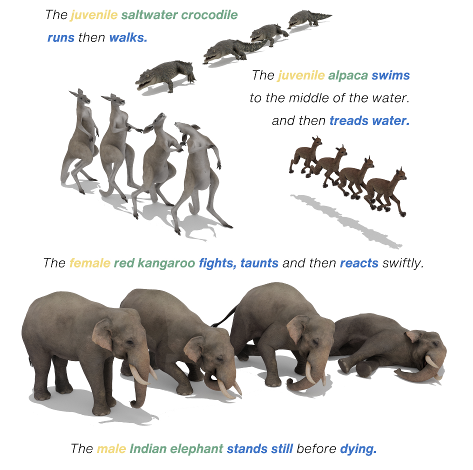
AniMo: Species-aware Model for Text-driven Animal Motion Generation
Xuan Wang, Kai Ruan, Xing Zhang, Gaoang Wang
IEEE Conference on Computer Vision and Pattern Recognition (CVPR), 2025
[Paper]
[Code]

We propose AniMo, a two-stage text-driven animal motion generation framework with the large-scale AniMo4D dataset,
achieving superior performance on both AniMo4D and AnimalML3D benchmarks.
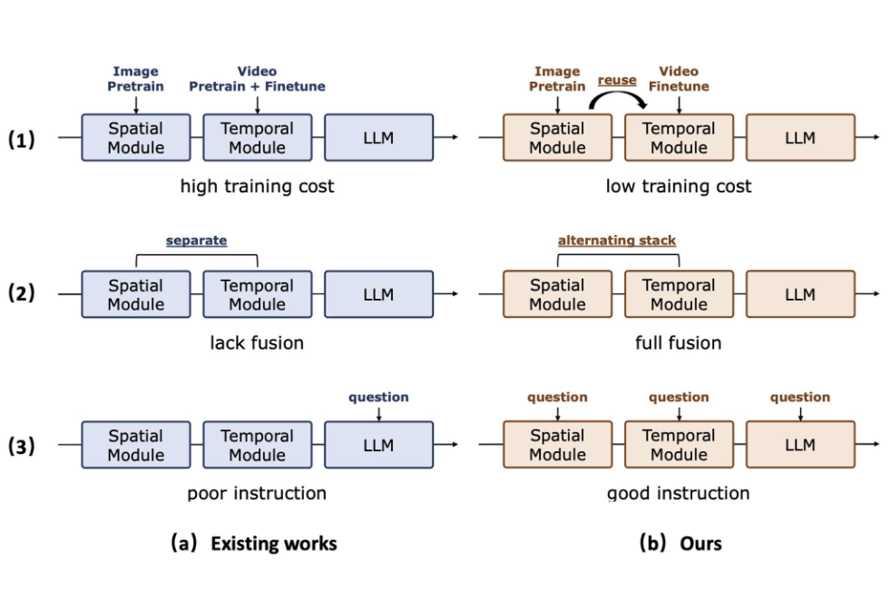
Efficient Transfer from Image-based Large Multimodal Models to Video Tasks
Shidong Cao, Zhonghan Zhao, Shengyu Hao, Wenhao Chai, Jenq-Neng Hwang, Hongwei Wang, Gaoang Wang
IEEE Transactions on Multimedia (TMM), 2025
[Paper]
We propose MTransLLAMA, an efficient transfer approach adapting pre-trained image LMMs to fine-grained video tasks
without video pre-training, achieving SOTA performance with fewer trainable parameters.
2024
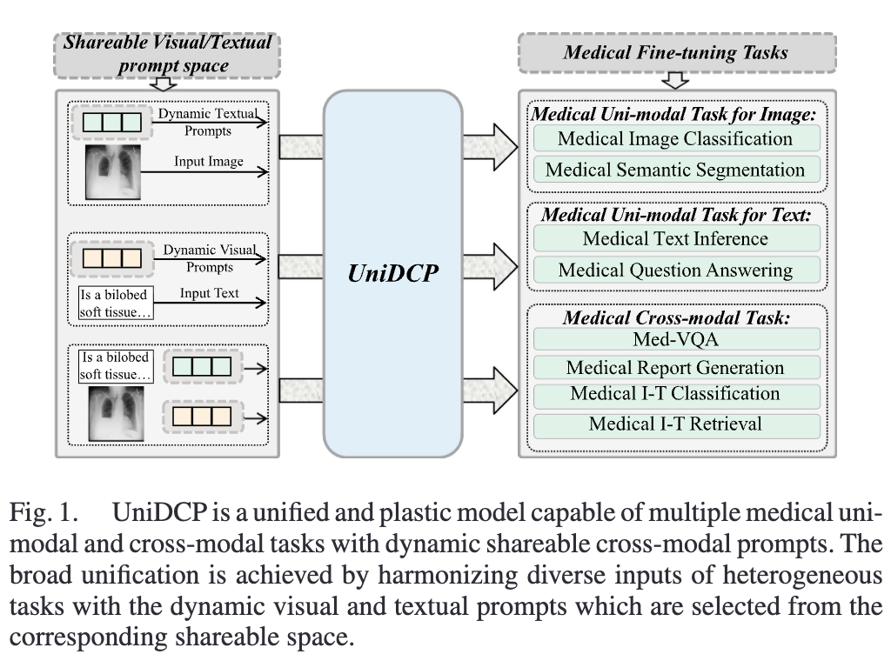
UniDCP: Unifying Multiple Medical Vision-language Tasks via Dynamic Cross-modal Learnable Prompts
Chenlu Zhan, Yufei Zhang, Yu Lin, Gaoang Wang, Hongwei Wang
IEEE Transactions on Multimedia (TMM), 2024
[Paper]
We propose UniDCP, a unified medical vision-language model with dynamic cross-modal prompts, the first to handle 8
medical uni/cross-modal tasks across 14 datasets, outperforming state-of-the-art methods.
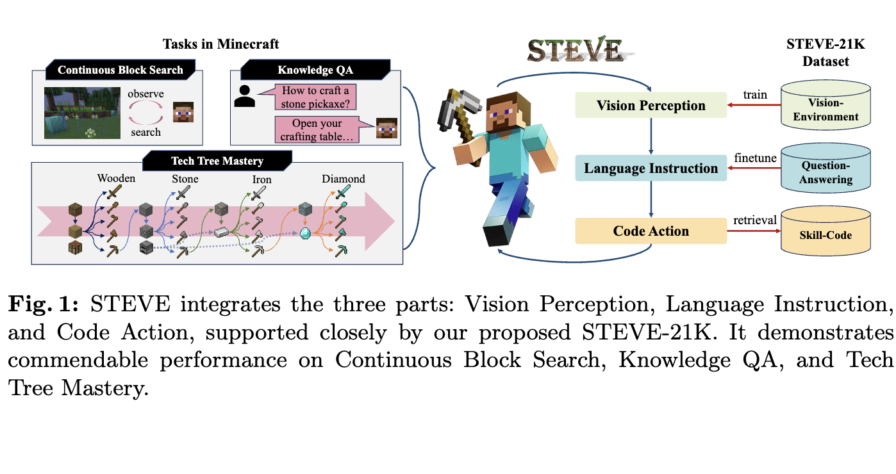
See and Think: Embodied Agent in Virtual Environment
Zhonghan Zhao, Xuan Wang, Wenhao Chai, Boyi Li, Shengyu Hao, Shidong Cao, Tian Ye, Gaoang Wang
European Conference on Computer Vision (ECCV), 2024
[Paper]
We propose STEVE, a comprehensive vision-language-code embodied agent for Minecraft paired with the STEVE-21K dataset,
achieving up to 1.5× faster tech tree unlocking and 2.5× faster block search.
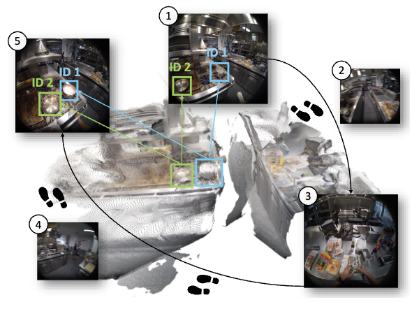
Ego3DT: Tracking Every 3D Object in Ego-centric Videos
Shengyu Hao, Wenhao Chai, Zhonghan Zhao, Meiqi Sun, Wendi Hu, Jieyang Zhou, Yixian Zhao, Qi Li, Yizhou Wang, Xi
Li, Gaoang Wang
ACM International Conference on Multimedia (ACM MM), 2024
[Paper]
We propose Ego3DT, a novel zero-shot framework for 3D object reconstruction and tracking in egocentric videos, achieving
1.04×-2.90× HOTA gains on two new datasets with superior robustness and accuracy.
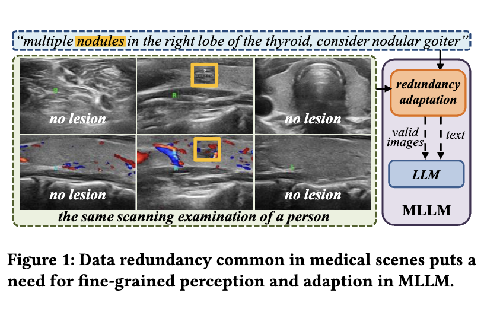
LLaVA-Ultra: Large Chinese Language and Vision Assistant for Ultrasound
Xuechen Guo, Wenhao Chai, Shi-Yan Li, Gaoang Wang
ACM International Conference on Multimedia (ACM MM), 2024
[Paper]
We propose LLaVA-Ultra, a fine-grained adaptive Chinese medical VLM for ultrasound visual conversations, outperforming
SOTA on three Med-VQA datasets via parameter-efficient tuning.
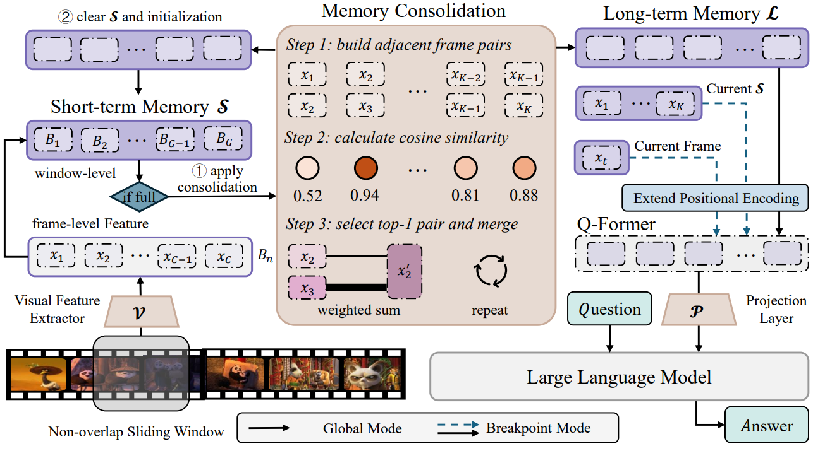
MovieChat: From Dense Token to Sparse Memory in Long Video Understanding
Enxin Song, Wenhao Chai, Guanhong Wang, Yucheng Zhang, Haoyang Zhou, Feiyang Wu, Haozhe Chi, Xun Guo, Tian Ye,
Yanting Zhang, Yan Lu, Jenq-Neng Hwang, Gaoang Wang
Computer Vision and Pattern Recognition (CVPR), 2024
[Paper]
[Code]
[Dataset]
[Website]

MovieChat achieves state-of-the-art performace in long video understanding by introducing memory mechanism.
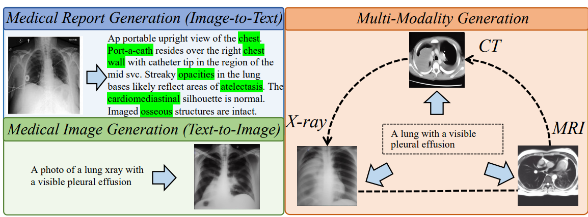
MedM2G: Unifying Medical Multi-Modal Generation via Cross-Guided Diffusion with Visual Invariant
Chenlu Zhan, Yu Lin, Gaoang Wang, Hongwei Wang, Jian Wu
IEEE Conference on Computer Vision and Pattern Recognition (CVPR), 2024
[Paper]
We propose MedM2G, the first unified medical multi-modal generative framework, outperforming state-of-the-art works on 5
medical generation tasks across 10 datasets.
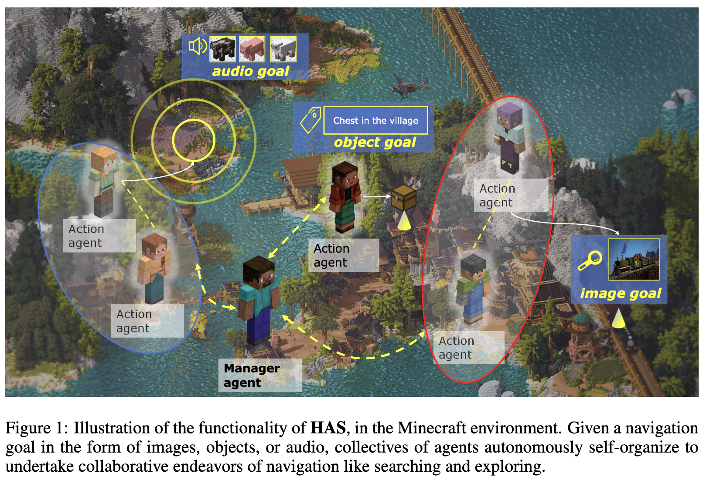
Hierarchical Auto-Organizing System for Open-Ended Multi-Agent Navigation
Zhonghan Zhao, Kewei Chen, Dongxu Guo, Wenhao Chai, Tian Ye, Yanting Zhang, Gaoang Wang
ICLR 2024 Workshop on LLM Agents, 2024
[Paper]
We propose HAS, a hierarchical auto-organizing LLM-based multi-agent navigation framework for Minecraft, enabling
centralized planning, dynamic group adjustment and unified multi-modal perception for open-world navigation.
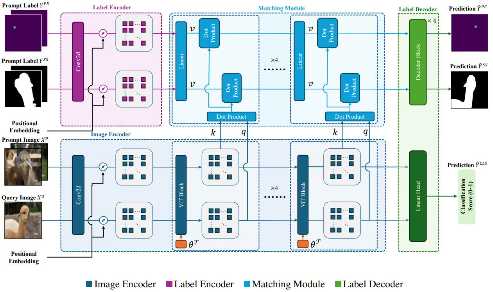
UniAP: Towards Universal Animal Perception in Vision via Few-Shot Learning
Meiqi Sun, Zhonghan Zhao, Wenhao Chai, Hanjun Luo, Shidong Cao, Yanting Zhang, Jenq-Neng Hwang, Gaoang Wang
Association for the Advancement of Artificial Intelligence (AAAI), 2024
[Paper]
[Code]
[Website]

UniAP, a novel Universal Animal Perception model that leverages few-shot learning to enable cross-species
perception among various visual tasks.
2023
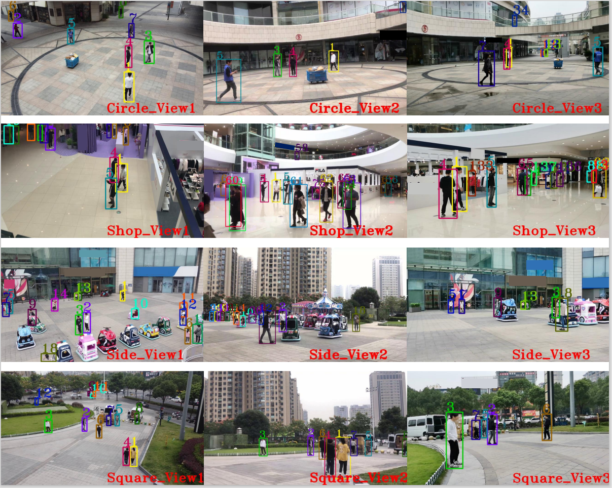
DIVOTrack: A Novel Dataset and Baseline Method for Cross-View Multi-Object Tracking in DIVerse Open Scenes
Shengyu Hao, Peiyuan Liu, Yibing Zhan, Kaixun Jin, Zuozhu Liu, Mingli Song, Jenq-Neng Hwang, Gaoang Wang
International Journal of Computer Vision (IJCV), 2023
[Paper]
[Dataset]
[Code]

A new cross-view multi-object tracking dataset for DIVerse Open scenes with dense tracking pedestrians.
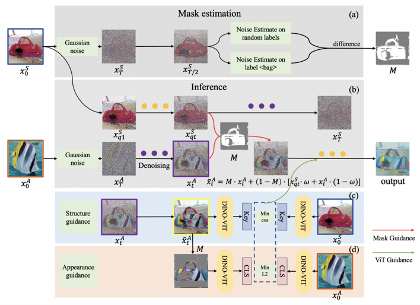
DiffFashion: Reference-based Fashion Design with Structure-aware Transfer by Diffusion Models
Shidong Cao, Wenhao Chai, Shengyu Hao, Yanting Zhang, Hangyue Chen, Gaoang Wang
IEEE Transactions on Multimedia (TMM), 2023
[Paper]
[Code]

We focus on a new fashion design task, where we aim to transfer a reference appearance image onto a clothing
image while preserving the structure of the clothing image.
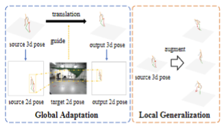
Global Adaptation meets Local Generalization: Unsupervised Domain Adaptation for 3D Human Pose Estimation
Wenhao Chai, Zhongyu Jiang, Jenq-Neng Hwang, Gaoang Wang
International Conference on Computer Vision (ICCV), 2023
[Paper]
[Code]

A simple yet effective framework of unsupervised domain adaptation for 3D human pose estimation.